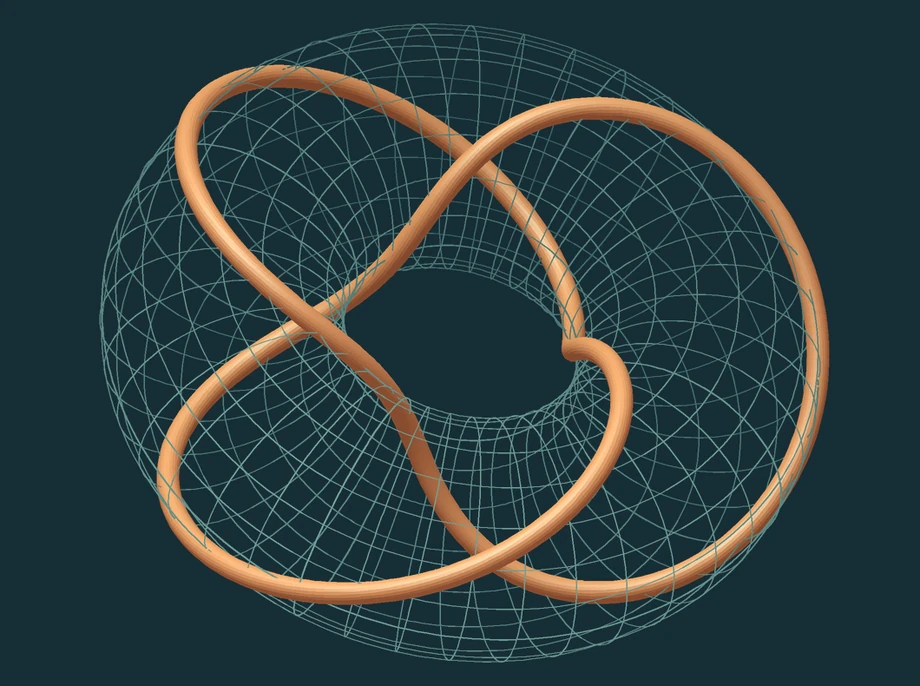
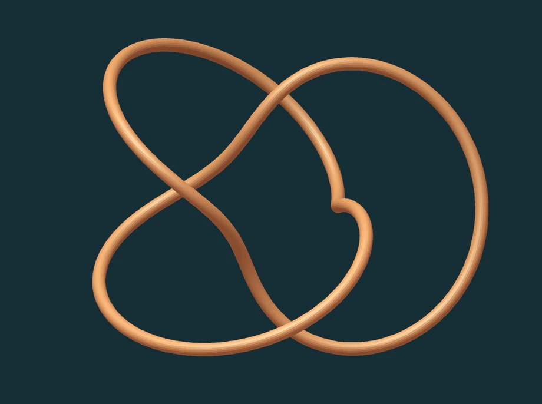

Personal website
The source code and revision history for this site.
A home for my work, ideas, and everything I’m curious about.
I enjoy exploring new ideas and finding interesting connections between them.


One closed curve winds twice around the torus and three times around its tube.
The source code and revision history for this site.
A place for papers, articles, preprints, and research notes.
A place for course materials, talks, and learning resources.
Explore the trefoil figureInterested in exchanging ideas or working together? Find me on GitHub